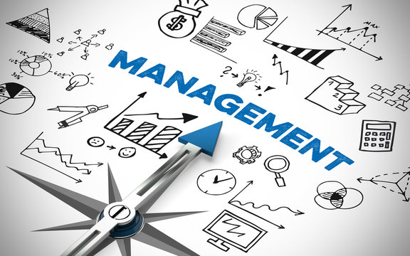

Des équipes pilotées
Projets d'envergure
PMP® Certified
Project manager
Management & Administration des entreprise — Grenoble IAE
“Piloter la réussite des projets, c’est transformer l’ambition collective en résultats concrets.”
Des équipes pilotées
Projets d'envergure
PMP® Certified

PMP® — Project Management Professional
- Maîtrise du cadre PMI (processus, livrables, KPI, parties prenantes…)
- Gestion de projets classiques (Predictive/Waterfall) et agiles (Scrum, Kanban)
- Analyse de risques, communication multi-acteurs, gestion contractuelle
- Optimisation des ressources et suivi budgétaire
Expériences
Janvier-Aout/2024
Formation gestion de projet et préparation à la certification PMP
BEN HAMMOUDA Consulting · Sfax/Tunisie (à distance)
Tâches totales : 0
Terminé : 0
Progression
Backlog ()
Fondation et alignement stratégique des projets avec les objectifs de l'organisation
Définition des bénéfices, de la valeur et de la gouvernance projet
Mise en place de la culture d'entreprise et pilotage des changements
Intégration de la conformité réglementaire et des standards de gestion
Capitalisation des connaissances et transfert des bonnes pratiques à l’organisation
À faire ()
Identification et engagement des parties prenantes
Constitution et formation de l'équipe projet
Création d’une vision commune et partage de l’approche méthodologique
Structuration du périmètre, du produit et de la roadmap
Mise en œuvre de processus d’amélioration continue et suivi des indicateurs de performance
En cours ()
Élaboration de l’échéancier détaillé et allocation des ressources
Construction du budget et gestion des risques projet
Définition des critères et exigences qualité
Intégration et synchronisation de l’ensemble des plans projet
Communication transparente et mobilisation des parties prenantes
Analyse des résultats et mesure du retour sur investissement
Terminé ()
Développement des compétences en leadership et en accompagnement d’équipe
Création d'un environnement collaboratif et responsabilisant
Mise en place de rituels d’évaluation et d’amélioration continue
Évaluation de l’avancement, gestion des points bloquants et adaptation rapide aux imprévus
Clôture structurée du projet ou de ses phases (livrables, valeur, bénéfices)
Mars-Septembre/2019
Acheteur projets
DEUX-PONTS Manufacture d'Histoires · Grenoble- Assistant Responsable d’Achats :
- Sourcing façonnier et divers fournisseurs (support, ST, Accessoires, machines, ...)
- Travail sur la préparation des portefeuilles fournisseurs (volume , CA, conditions de règlements, ...)
- Consultation , mise en concurrence
- Approvisionnement consommables Atelier.
- Création d'une bibliothèque physique Fournisseurs Sous-traitant
Novembre/2018 - Mars/2019
Projet tutoré marketing
CIBC Isère · Grenoble (à distance)- Marketing opérationnel :
- Analyse de l’entreprise (forces/faiblesses), étude de marché
- Comprendre le marché et les principaux concurrents présents.
- Analyse des besoins (marché)
- Formaliser des préconisations d’actions